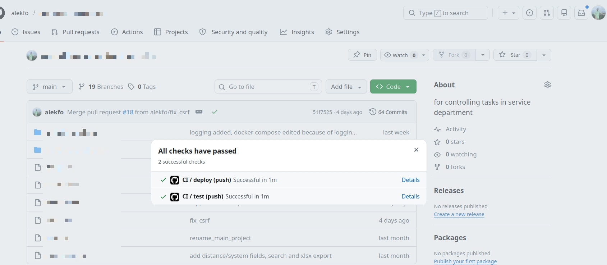

Production-деплой и CI/CD
для fieldlog.ru
Полный production-стек для Django-приложения: три Docker-контейнера, nginx с HTTPS, автоматическое обновление сертификатов и GitHub Actions пайплайн с тестами, бэкапом БД и zero-downtime деплоем по SSH.
Инфраструктура
Приложение запущено в трёх Docker-контейнерах через Compose: web (Django + Gunicorn),
db (PostgreSQL 16) и nginx (reverse proxy + SSL).
Nginx терминирует HTTPS и отдаёт статику напрямую, не нагружая Django.
Медиафайлы защищены от прямого доступа — выдаются только через X-Accel-Redirect после проверки авторизации в Django.
HTTPS и сертификаты
- Сертификат Let's Encrypt получен через Certbot (standalone mode)
- Nginx: HTTP → 301 редирект на HTTPS, TLS 1.2 / 1.3
- ACME-challenge проходит без даунтайма через
/var/www/certbot - Автопродление — cron-задача 1-го числа каждого месяца в 3:00
CI/CD пайплайн — GitHub Actions
Два job-а: test и deploy.
Деплой запускается только если тесты прошли, и только при пуше в main
(не на PR — чтобы не деплоить незамерженный код).
Job: test
- Python 3.12, кеш pip для ускорения
- Установка зависимостей из
requirements.txt - Применение миграций на SQLite (без внешних сервисов в CI)
- Запуск тестов Django с
--verbosity=2
Job: deploy
- SSH-подключение к серверу через appleboy/ssh-action (ключи в GitHub Secrets)
- Дамп PostgreSQL с временной меткой — до любых изменений
- Сохранение логов приложения в файл перед пересборкой
git pull origin main— забрать новый кодdocker compose build --no-cache web— пересобрать образdocker compose up -d— поднять без даунтайма
Скриншоты

GitHub Actions — успешный прогон test → deploy